Významné osobnosti 1. světové války
Politici a generálové
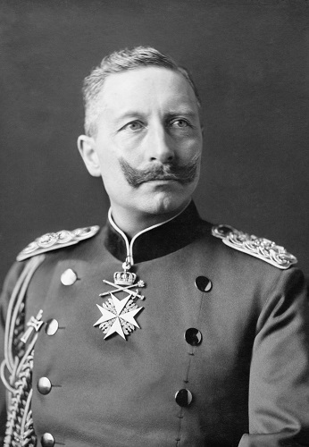
Wilhelm II. – Pruský císař
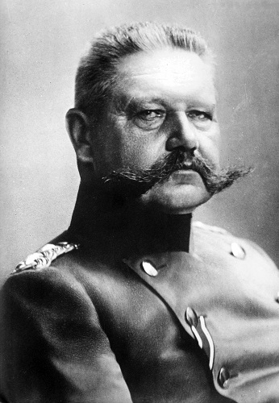
Paul von Hindenburg – Pruský polní maršál
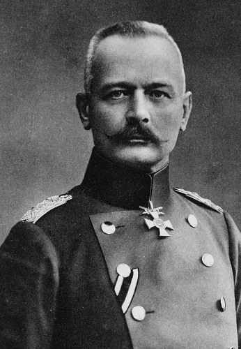
Erich von Falkenhayn – Pruský vyznamenaný generál

Erich Ludendorff – Pruský generál a politik
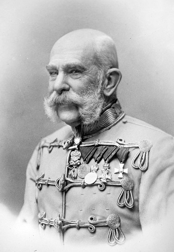
František Josef I. – Rakousko-Uherský císař
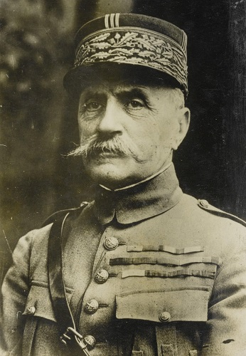
Ferdinand Foch – Francouzský maršál
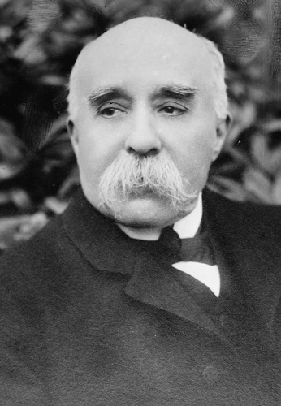
Georges Clemenceau – Francouzský premiér a politik
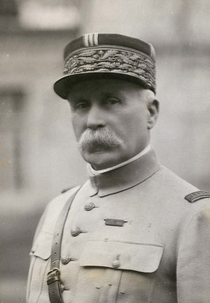
Philippe Pétain – Francouzský generál a politik
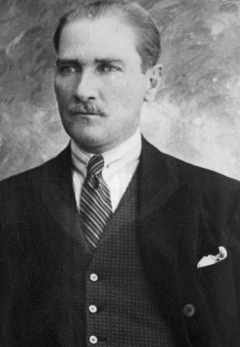
Mustafa Kemal Atatürk – Turecký vojevůdce
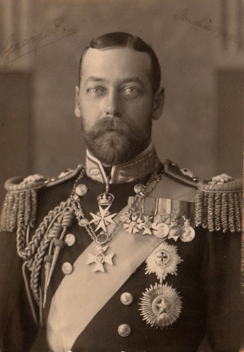
Jiří V. – Král Spojeného království
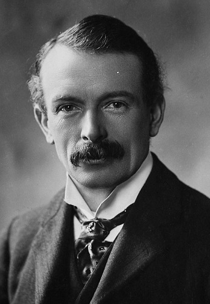
David Lloyd George – Britský premiér
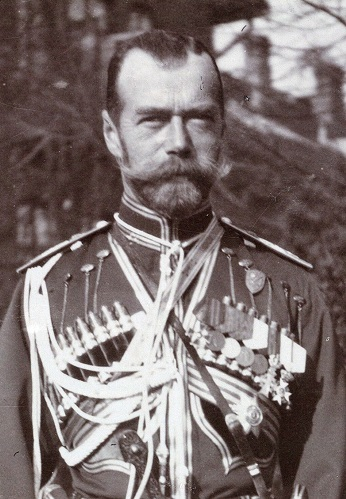
Mikuláš II. – Car Ruského impéria
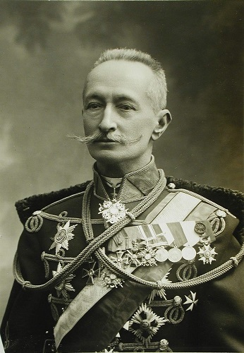
Alexej Brusilov – Ruský generál
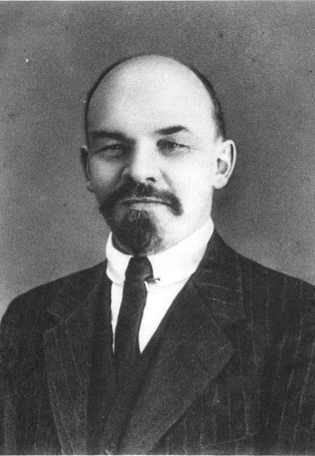
Vladimír Iljič Lenin – Komunistický revolucionář
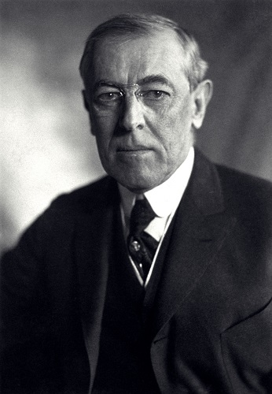
Woodrow Wilson – Prezident USA
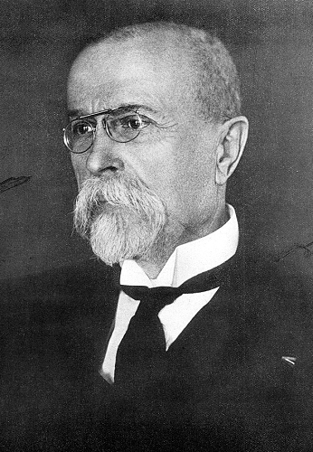
Tomáš Garrigue Masaryk – Český státník
Hrdinové bitev
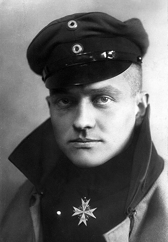
Manfred von Richthofen – Rudý baron, letecké eso
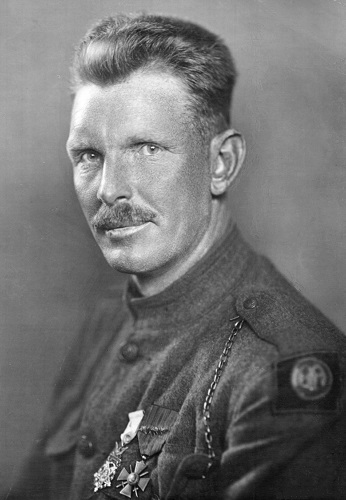
Alvin York – Hrdina, obdržel Medaili cti
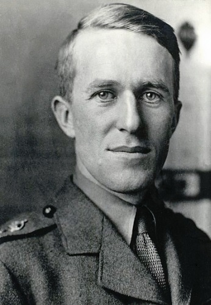
Thomas E. Lawrence – Organizátor arabského povstání
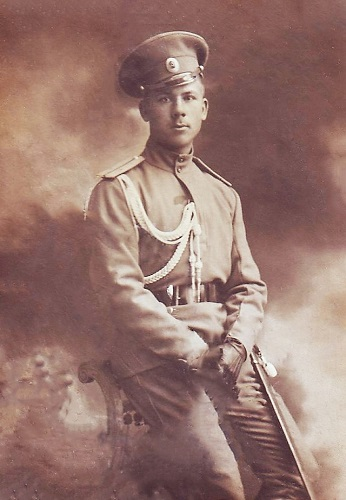
Vladimir K. Kotlinsky – Důstojník pevnosti v Osowieci